Whenever I present on emo, the question that I get the most by far is: “What do you think made emo a girl thing in the 2000s? What was the turning point?”
Well…let me explain.
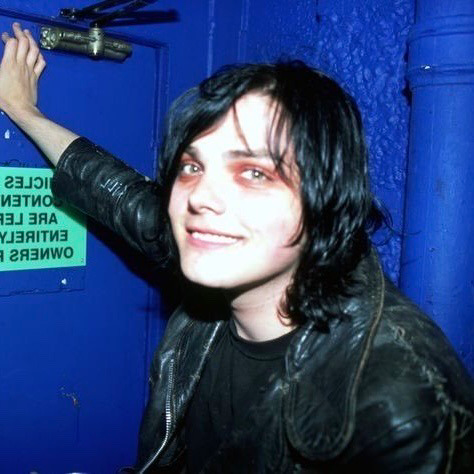
It was GERARD.
First, I’ll concede that calling Gerard the turning point in emo is maybe an oversimplification here—without the right cultural conditions influencing emo at the turn of the century, or Gerard’s convenient birth at the exact epicenter of the New Jersey post-hardcore scene, My Chemical Romance never would have gotten anywhere. Giving Gerard all the credit for feminizing emo in the 2000s obscures a lot of other people’s contributions to this very noble endeavor. And in order for My Chemical Romance to take off in the way that it did, a lot of things had to fall into exactly the right place at the right time.
That said, Gerard’s influence on the feminization of emo’s aesthetics in the early 2000s cannot be overstated. As arguably the most well-known, most visible, most beloved quote-unquote “emo” band of the era, MCR played a huge part in the development of emo’s “look.” For the uninitiated, My Chemical Romance formed in 2001 in the suburbs of Newark, New Jersey after frontman Gerard Way witnessed the September 11th attacks on the twin towers during his morning commute into the city. Driven by a renewed need to do something important with his life, he promptly quit his job as a comic artist and instead devoted all of his time and energy toward creating the greatest rock band the world had ever seen, which would also save kids’ lives through anti-suicide messaging. After some early shuffling, the band’s lineup solidified with Gerard on vocals, his younger brother Mikey 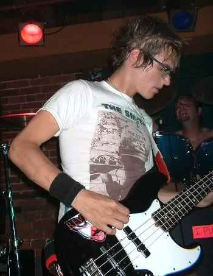 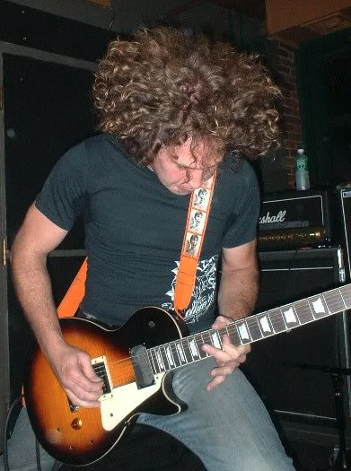 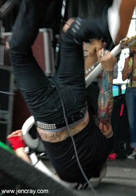 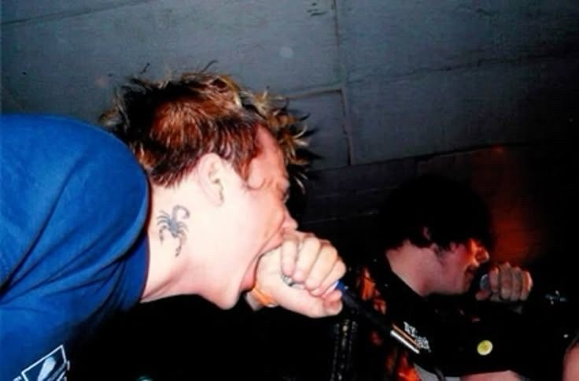
For this project, it seems unnecessary to provide you with a complete and unabridged history of MCR when 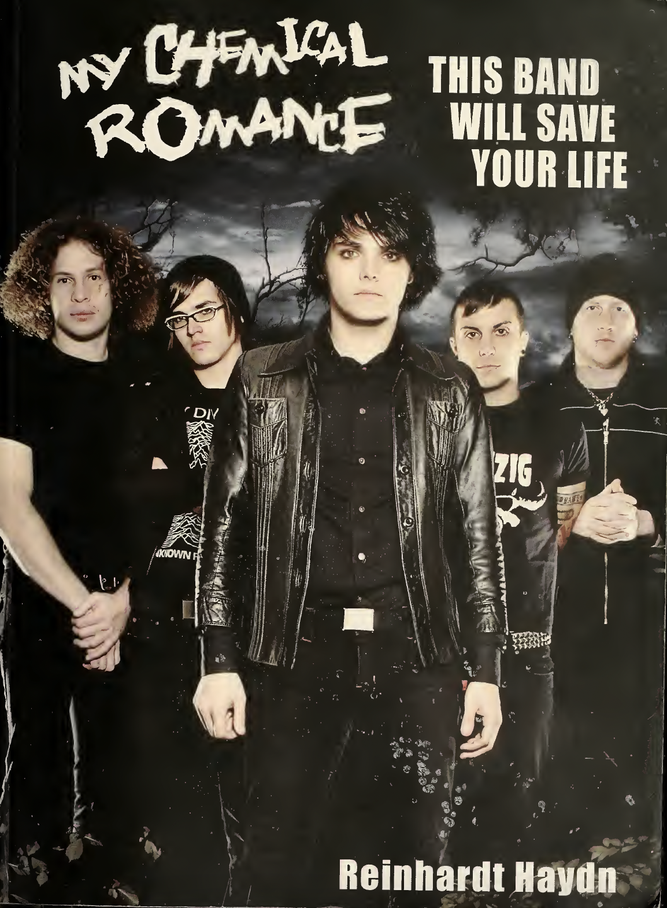 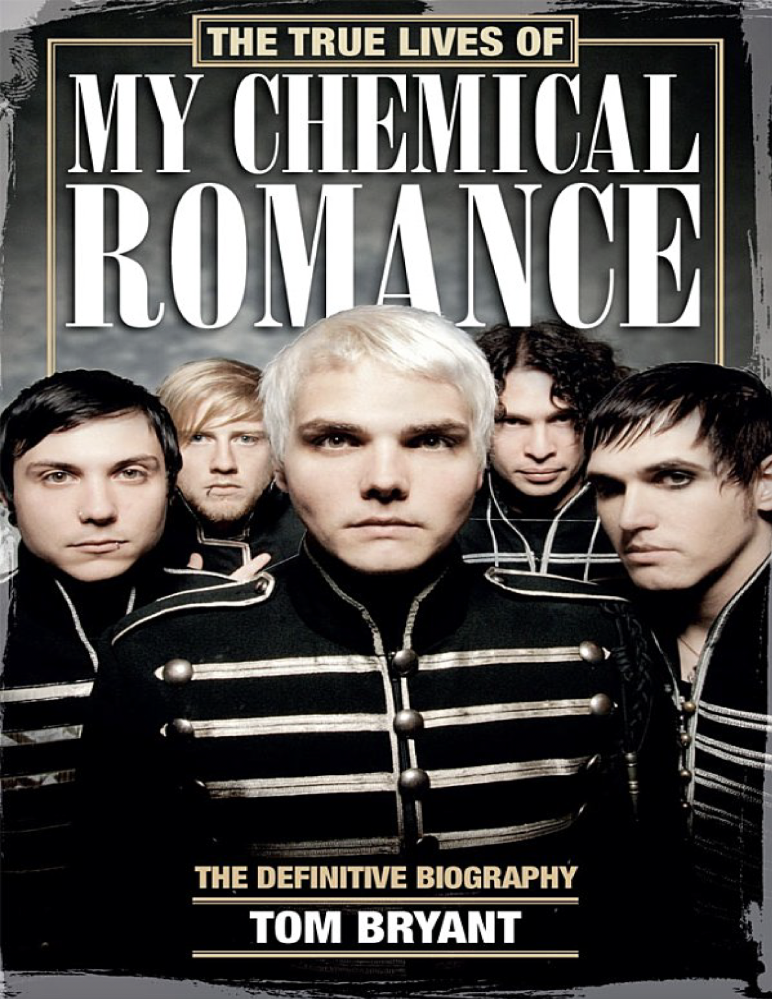
As I alluded to a little bit ago, MCR benefited from their convenient placement at the center of New Jersey’s nationally-renowned post-hardcore/emo scene. And although they shared enough similarities with their peers to participate in the local suburban basement culture, it was what they did differently that allowed them to break out onto a global stage. Perhaps the most notorious way that they differentiated themselves from their peers was through their embrace of costuming and performativity. From early on, Gerard garnered subcultural attention for wearing makeup and presenting himself in a feminized manner in a subculture that still largely consisted of young white men rocking jeans, t-shirts, and dirty sneakers onstage. It’s a little bit hard to delineate how much of Gerard’s femininity was an intentional stage performance designed to challenge emo’s masculine bias and how much was just his naturally soft face, long hair, and high voice. (He was often mistaken for a girl growing up, and sometimes 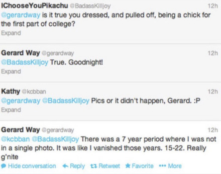
As the band picked up steam, Gerard’s love for costuming accelerated and eventually permeated the rest of the band as they supported Gerard’s vision for their 2004 album Three Cheers for Sweet Revenge. Very loosely a concept album, Revenge told the fictional tale of a man separated from his deceased lover who must capture “the corpses of a thousand evil men” to reunite with her in heaven. And although the death of the Ways’ grandmother during the writing process led them to refocus the album on more personal concerns, the band took the vibe of the original story and used it to create their stage look. Bloody, violent, and transgressively feminine, this black-and-red aesthetic came to define emo’s look for years to come. Here, the style was essentially a masculine base layer (a suit jacket or bulletproof vest) adorned with feminine-coded accessories like rhinestone bracelets, eye makeup, girly enamel pins, feather boas, and of course, Frank’s iconic white Les Paul guitar with the word “PANSY” spelled out defiantly across the body in sparkly holographic letter stickers. Fans eagerly replicated the band’s look in their own creative ways, pairing miniskirts with men’s ties and skeleton gloves, inventing their own red-and-black makeup looks, and often just outright crossdressing at MCR shows. The band would then follow up smash-hit Revenge with 2006’s The Black Parade and 2010’s Danger Days: The True Lives of the Fabulous Killjoys—both of which had their own unique, highly-curated aesthetic languages.
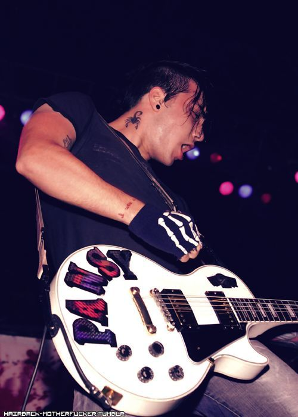
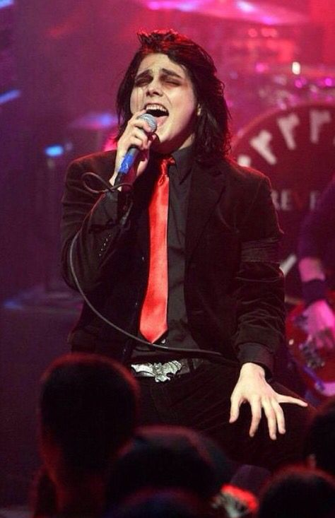
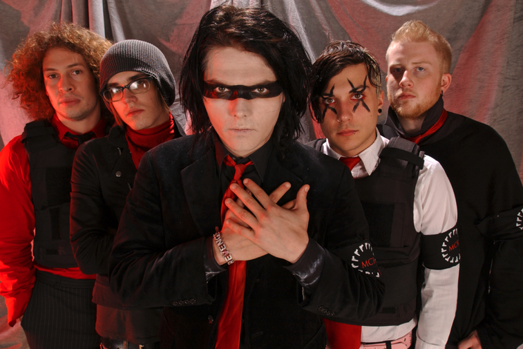
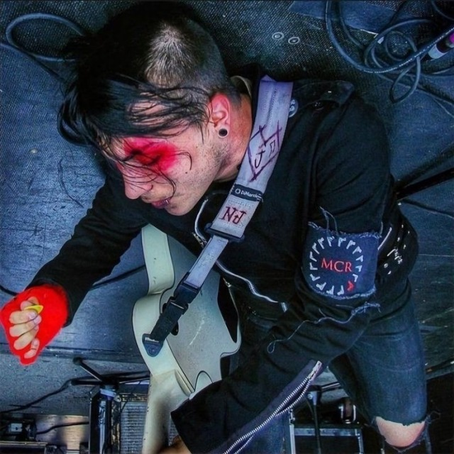
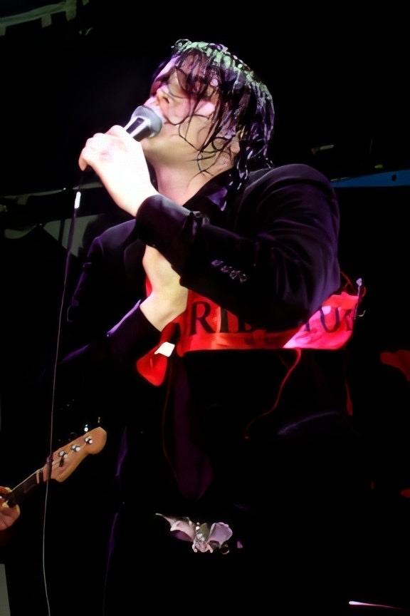

Here, it’s important to point out how MCR’s love for performance, costume, and fantasy put them in direct conflict with emo’s historical emphasis on modesty and accessibility. Emo bands wore jeans and t-shirts. They sang songs about real life. They were supposed to be relatable to their audiences. How could costuming, glittery accessories, and makeup be relatable?
Well, it turns out these things are relatable if you ask the right people, like, for instance, women and queer people.
When MCR hit the scene in the early 2000s, they (along with a couple other notable bands like Fall Out Boy) enabled the “fangirlification” of emo, where the genre’s fanbase was suddenly and for the first time absolutely dominated by young women. Emo’s popularity on emerging social media platforms like Makeoutclub, Friendster, MySpace, and LiveJournal transformed emo from a basement subculture into an online discourse. This move allowed young women to assert themselves in a scene that, by nature of its underground-ness, had been a relative boys’ club up to that point. Teen girls might not have had much power in a dirty club in a bad part of town or some college dude’s basement, but they did know how to leverage social media to their advantage.
Completely subverting emo’s historical masculine bias, these young women eagerly latched onto bands like My Chemical Romance who openly embraced femininity in their appearances and seemed to privilege the feminine over the traditionally masculine. The band’s love for androgyny and queer performance also empowered their queer fans, who could use the band as a site for their own queer experimentations.
By creating a space in emo where feminine androgyny ruled, My Chemical Romance drew a proverbial line in the sand, splitting emo between the masculinized basement scene and their own feminized version of the genre rhetorically-tied to teen fangirls and queerness.
Notably, the latter half of the 2000s saw the formation of the “emo revival” sub-genre, which attempted to revert emo back to its pre-MCR basement roots. Bands like Modern Baseball, the Hotelier, and Joyce Manor drew inspiration from emo bands of the 90s, and just like emo bands of the 90s, they consisted mostly of men in jeans and t-shirts playing twinkly guitar riffs for other men in jeans and t-shirts. As I hope is evident by this point, “revival” in this context carries particular type of gendered baggage. After acts like MCR went mainstream in the mid-2000s, emo revival attempted to reestablish the genre’s authenticity by placing it back in suburban basements and stripping away the feminine androgyny, commercialism, and theatricality that had ruled for the previous half-decade. “Revival” can only happen after a death, and here the implication here is clear: teen girls killed emo.
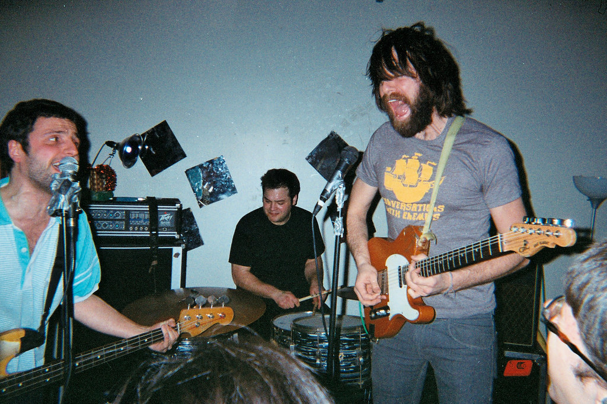
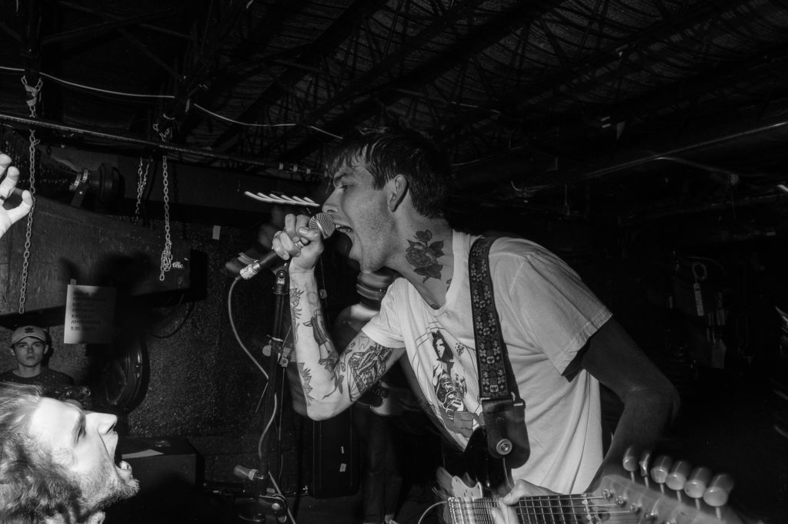
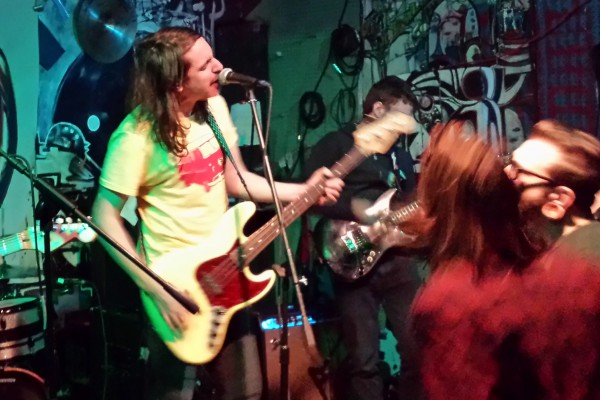
Emo’s move back to the basement sought to recenter emo around masculine ideals historically embedded in underground rock music, thereby reviving the genre. My bet is that a lot of these people would attribute their distaste for third-wave emo to its commercialism rather than its queer femininity if directly asked, but that certainly didn’t stop feminine fashion from being the issue in anti-emo discourse of the 2000s.
For instance, Tom Mullen ran a series on his blog from 2007-09 called “BOMB THIS SITE” where he regularly exposed niche emo fashion websites and forums frequented by young emo fans for his decidedly older (and I’m guessing male-er) audience to laugh at.1 (He then goes on to praise revival band Algernon Cadwallader.) Likewise, Dan Ozzi wrote in a 2013 Noisey column on the subject that bands like MCR and Fall Out Boy “poison the genre” and “give it the awful stigma that emo is nothing more than a bunch of eyeliner-wearing goth teens with stupid swoopy haircuts and black nail polish.”2 This reference to three distinctly feminine-coded elements in emo’s popular look reveals how it is specifically the feminine and queer aesthetics of third-wave emo that threaten the genre’s credibility more than anything technical about the music itself. Therefore, “emo revival” can be understood as an aesthetic retreat from the queer and the feminine back to the safety of the suburban male basement of the 90s. Or, more explicitly, an attempt to wrest control of the genre away from the 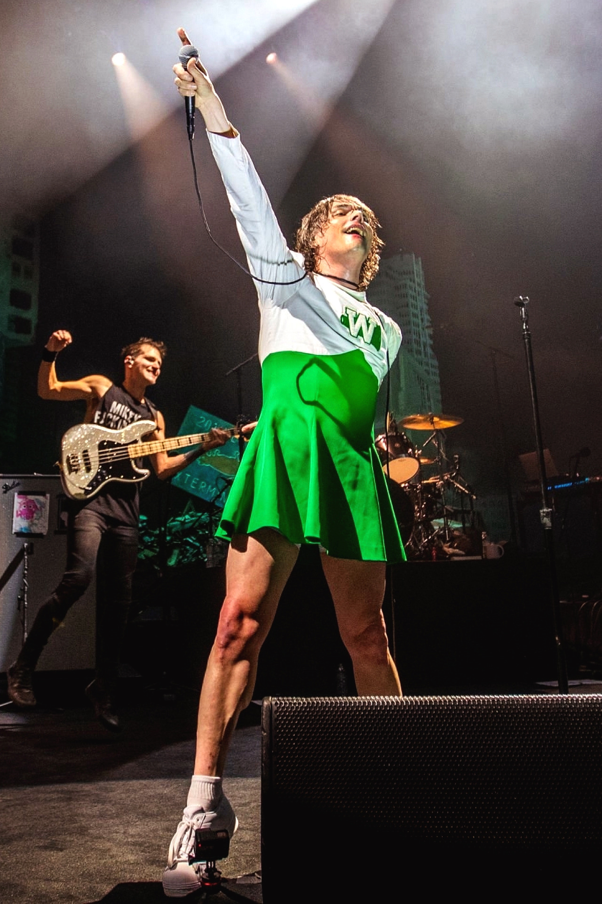
1 Tom Mullen, “Washed Up Emo,” Blogger.com, archived October 11, 2008, at https://web.archive.org/web/20081011085025/http://www.washedupemo.com/.
2 Dan Ozzi, “There’s No Emo Revival, You Just Stopped Paying Attention,” Noisey (Vice), archived June 13, 2025 at https://web.archive.org/web/20250613201145/https://www.vice.com/en/article/theres-no-emo-revival-you-just-stopped-paying-attention/.